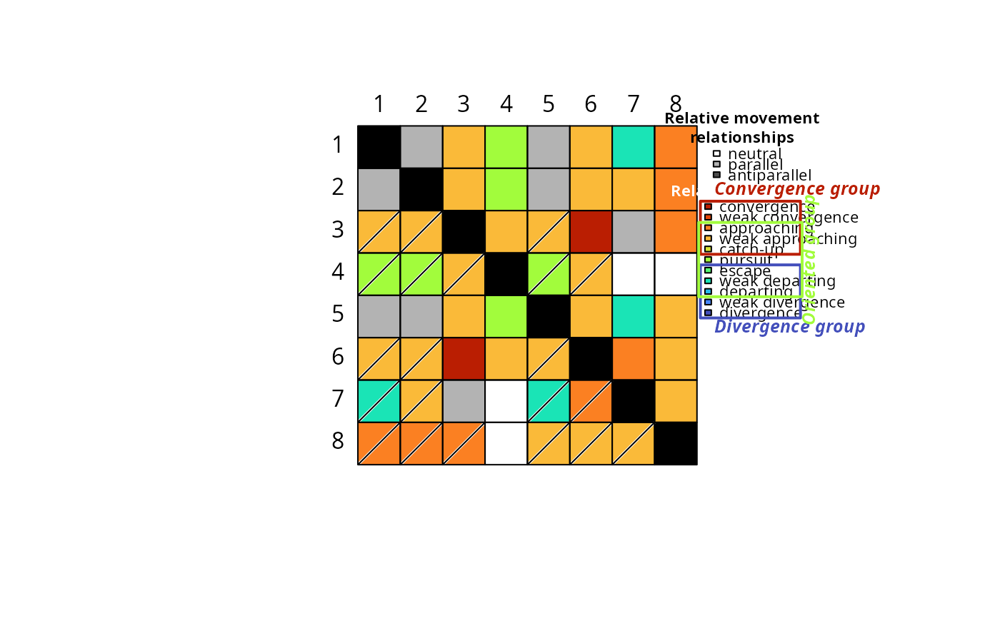
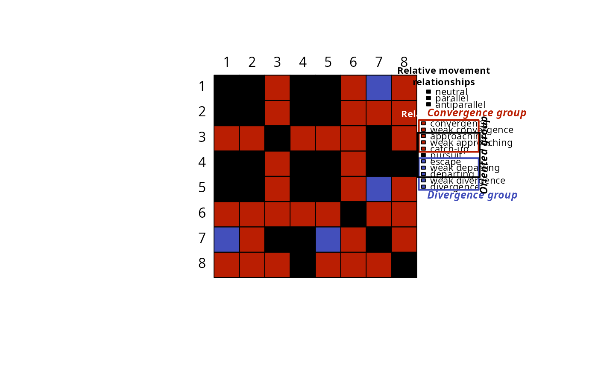
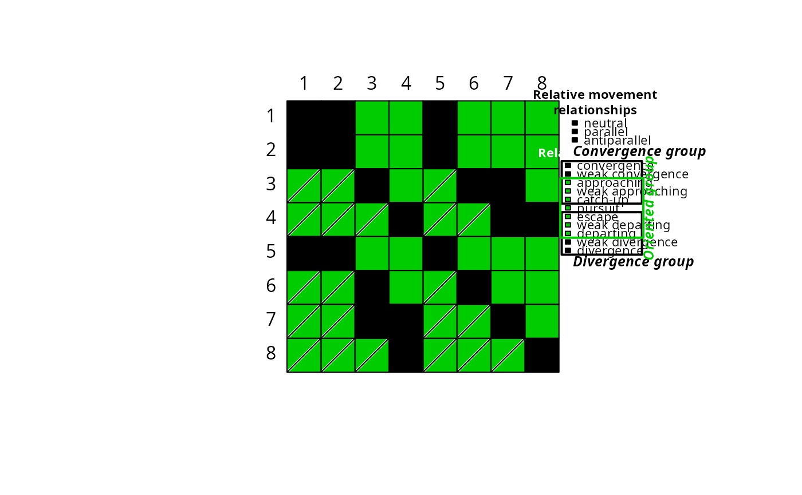
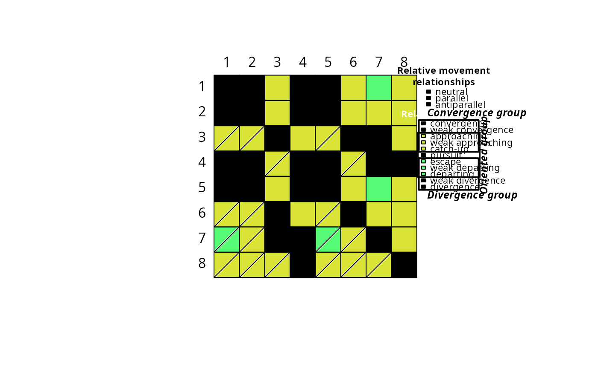

Heat map-like plots for Relative Trajectory Movement Assessment (RTMA)
Source:R/trajectoryRMAPlot.R
trajectoryRMAPlot.RdFunction trajectoryRMAPlot provides heat map-like plots for Relative Trajectory Movement Assessment (RTMA) performed by function trajectoryRMA.
Usage
trajectoryRMAPlot(
x,
mode = "full",
relationships.colors = NULL,
traj.names = NULL,
order.row = NULL,
order.col = NULL,
vertical = FALSE,
legend = TRUE
)Arguments
- x
An object of class
RTMA.- mode
The mode of trajectory relationship display (see details). Defaults to
"full", ignored ifrelationships.colorsis specified.- relationships.colors
Vector of user-chosen colors to represent trajectory relationships. Must have specific properties (see details). Overrides
mode.- traj.names
The names of trajectories. Defaults to the names provided in
x.- order.row
A re-ordering (and potential selection) of the rows of the output. If provided without
order.col, the re-ordering is also applied to columns.- order.col
If
order.rowis provided, this parameter allows to set a different order or selection for columns of the final display (allowing rectangular plots).- vertical
Flag to indicate if the top trajectory names should be rotated 90°, defaults to
FALSE.- legend
Flag to indicate if the legend should be plotted, defaults to
TRUE.
Details
Function trajectoryRMAPlot provides heat map-like plots for Relative Trajectory Movement Assessment (RTMA).
A key feature of the function is its different mode of representation, allowing to put more or less emphasis on some aspect of trajectories relative movements.
The 12 relative movement relationships recognized by RTMA may belong to three higher-order groups: the convergence group, the divergence group and the oriented group (see trajectoryRMA for more details).
The parameter mode allows to display targeted groups or combination of groups instead of the detailed relationships. Possible values for mode are:
"full": Default value. Display the finest level relationships."convdiv": Displays and groups relationships belonging to the convergence and divergence groups."oriented": Displays and groups relationships belonging to the oriented group."crossed.groups": Displays and groups relationships belonging simultaneously to the oriented group and either the convergence or the divergence group."convdiv.complete": As"convdiv"but adding in details the relationships that are neither from the convergence or divergence group."oriented.complete": As"oriented"but adding in details the relationships that are not from the oriented group."crossed.groups.complete": As"crossed.groups"but adding in details the relationships that do not belong to both the oriented group and either the convergence or divergence group.
Relationships belonging to the oriented group are asymmetric. Practically, this means that one trajectory is in front while the other is in the back.
In the trajectoryRMAPlot output, crossed cells indicate that the corresponding ROW trajectory is the trajectory in front.
COLORS: Each mode comes with default colors for the heat map. Nonetheless, the parameter relationships.colors allows user-defined colors instead.
The vectors of colors provided in relationships.colors must have length 21 with names corresponding to the names of the different relationships recognized by RTMA
(can be found in a RTMA object x with x$dynamic_relationships_taxonomy$dynamic_relationship).
References
Djeghri et al. (in preparation) Uncovering the relative movements of ecological trajectories.
Examples
#Prepare data
data("avoca")
avoca_D_man <- vegclust::vegdiststruct(avoca_strat,
method ="manhattan",
transform = function(x){log(x+1)})
years <- c(1971, 1974, 1978, 1983, 1987, 1993, 1999, 2004, 2009)
avoca_times <- years[avoca_surveys]
avoca_x <- defineTrajectories(d = avoca_D_man,
sites = avoca_sites,
times = avoca_times)
#Perform RTMA
avoca_RTMA <- trajectoryRMA(avoca_x)
#Default (full) output
trajectoryRMAPlot(avoca_RTMA)

#Play with different visualization modes of relationship groups
trajectoryRMAPlot(avoca_RTMA,mode="convdiv")

trajectoryRMAPlot(avoca_RTMA,mode="oriented")

trajectoryRMAPlot(avoca_RTMA,mode="crossed.groups")
